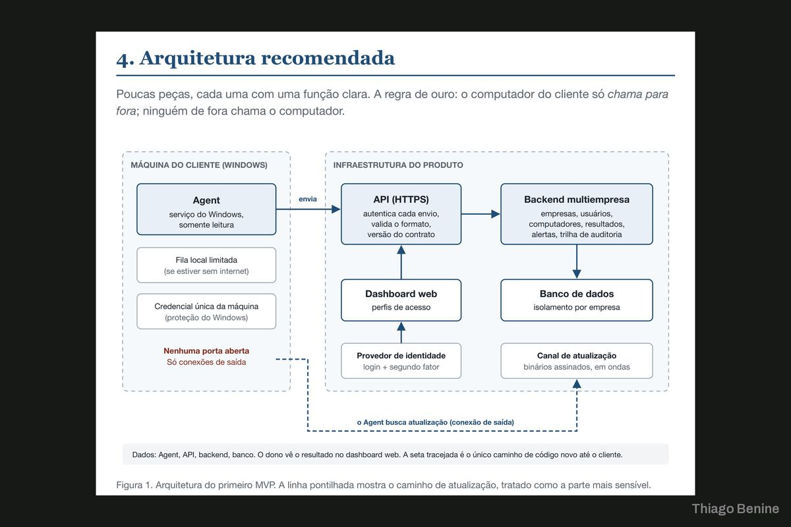
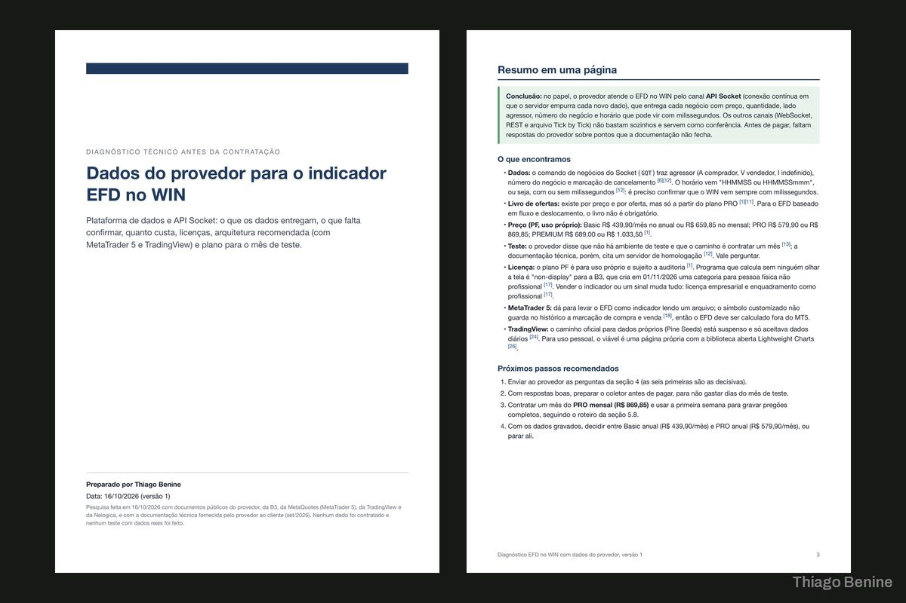
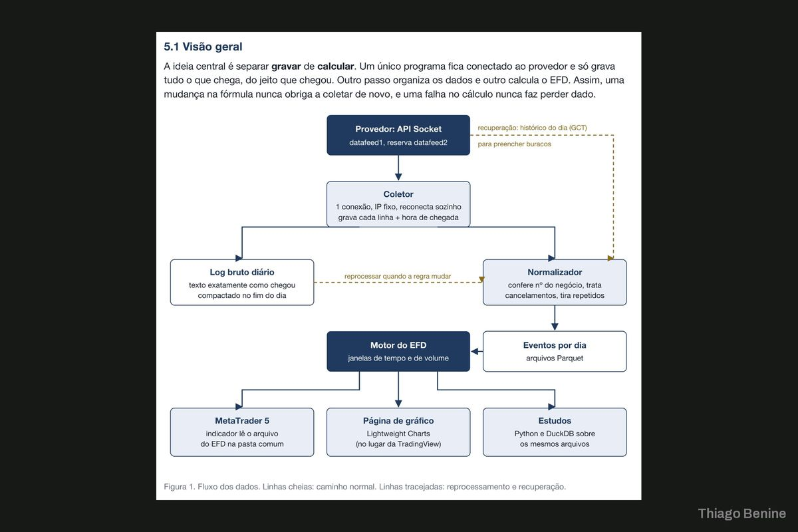
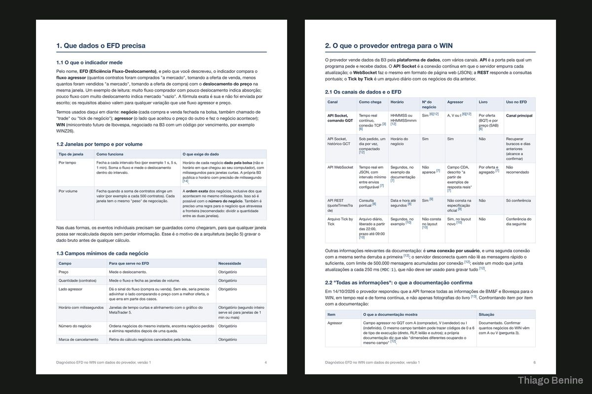
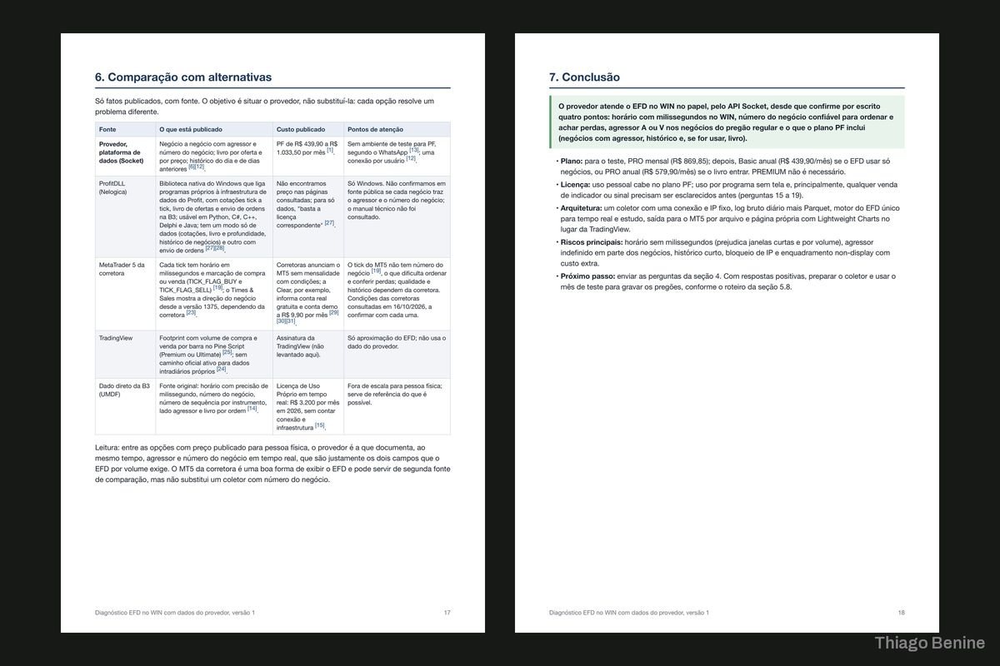
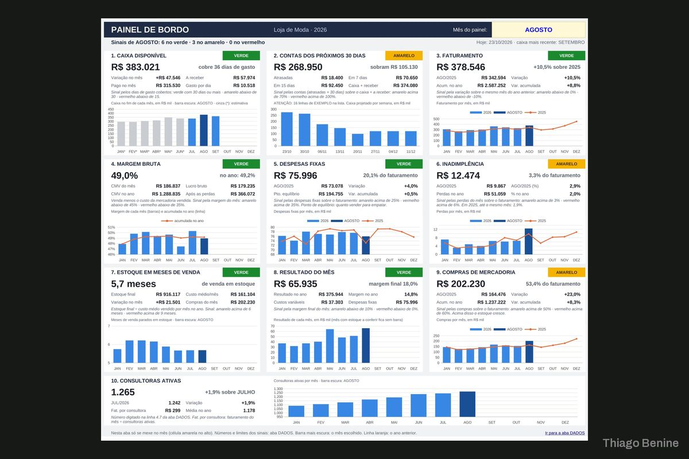
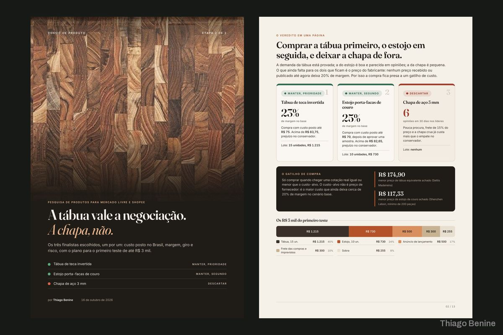
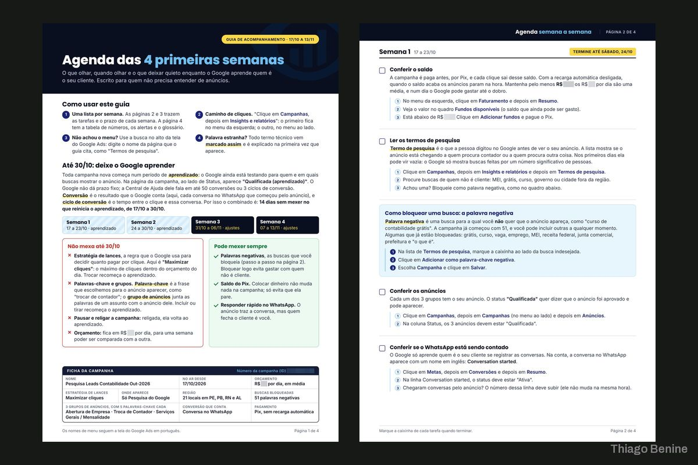

Diagnóstico de API de dados de mercado da B3
Relatório técnico de 20 páginas e um mini índice calculado para validar os dados da bolsa.




Sobre o projeto
O cliente precisava saber o que a API de um provedor de dados da B3 entrega de fato antes de construir em cima dela. A conexão e os dados foram analisados e o resultado virou um relatório técnico de 20 páginas, com um mini índice calculado para validar a leitura e uma proposta de arquitetura.
O que foi entregue
- Relatório técnico de 20 páginas
- Mini índice calculado
- Proposta de arquitetura
Avaliação do cliente
5,0 de 5
Excelente profissional, pontual, entende da matéria, foi muito bom trabalhar com ele
Projetos parecidos


